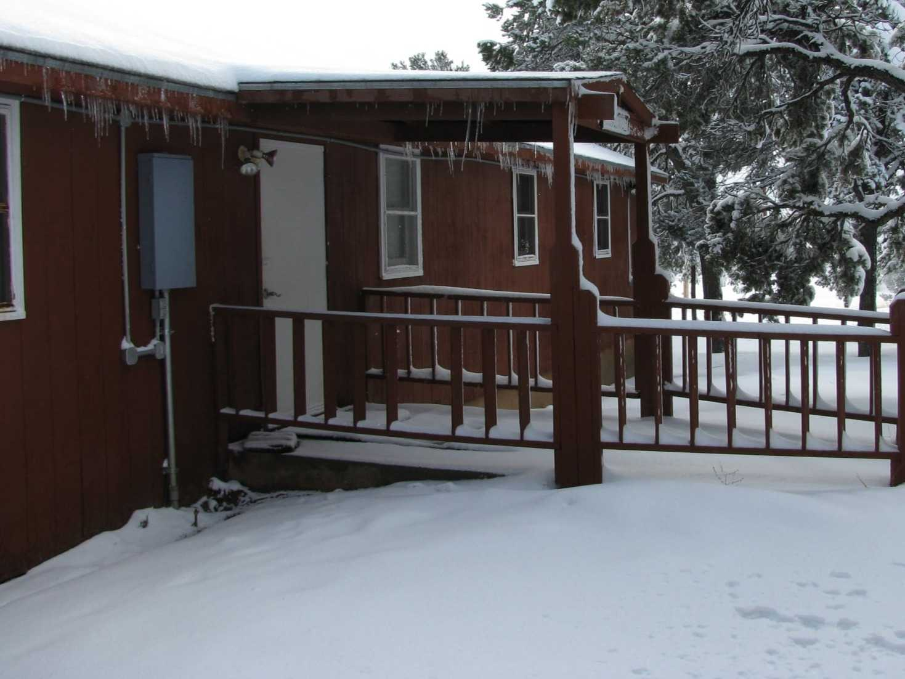
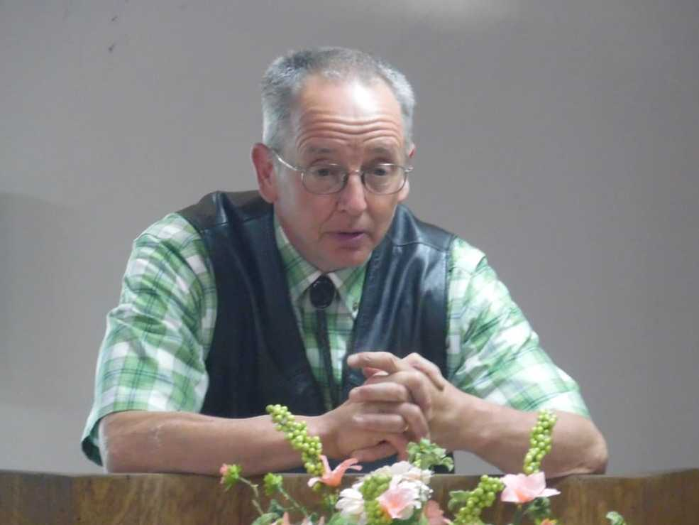
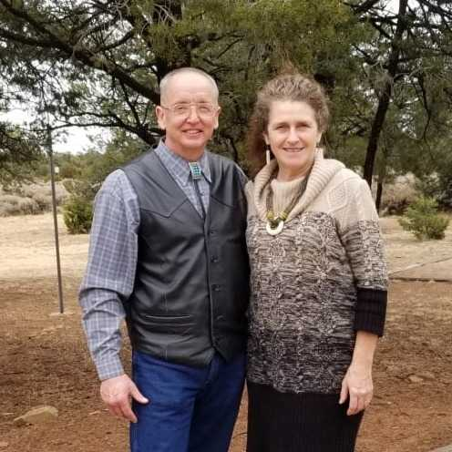

In the 1950' Baptist Mid-Mission (BMM) was given an 8 acres parcel of private property that is surrounded by the Navajo Nation tribal lands. There have been approximately 9 successive BMM missionary couples and singles ministering to the native people here throughout the last 75 years. As the mission continues it's work, there has been much fruit for their labor along with great encouragement in this journey. The work is not complete and still much to be done.


During the summer of 1981, while mowing grass for an elderly neighbor Joe accepted Jesus as his Lord and Savior. For years he knew Christ died for the sins of the world, but thought if you were good everyone would go to heaven. It was at this time he learned that there was a personal decision to be made.
Growing up in a Christian home, Dawn came to know the Lord as her savior at an early age. As a pre-teen she felt the Lord calling her to serve as a missionary.

Joe and Dawn have been working with Native Americans in the Southwest since 1992. They pursued their calling working with the Hopis and Navajos for 6 years in Winslow, Az. In 1998 God redirected their ministry to Jones Ranch, New Mexico to work with the Navajos.
Joe has been Pastoring in both locations involving himself in evangelism, discipling, and training Native Americans to live for the Lord.
Dawn has been teaching the youth, working with the Ladies ministries, using her musical talents, singing in English and Navajo.
Together they've ministered in this cross-cultural ministry through, church services, retreats, support groups, teen outings, friendship evangelism, Navajo Bible Study, and summer camp ministries. With a strong desire to reach Navajo families, they've spent much of their time encouraging individuals through Biblical Counseling to live for the Lord.
Grew up as 1 of 8 Pastor's Kids (PK's) and during her elementary years, there was a sermon on "Heaven and Hell" and realized that she was a sinner as the Bible stated "For all have sinned." Yet, God made a way that she could have a relationship with him. She chose to accept God as her savior.